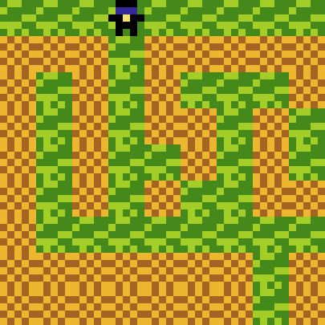

The Tedious Game is fully released, made using PuzzleScript. It is a game similar to Sokoban, a push-block puzzle game. The Tedious Game is named so for two of its levels, which are long levels with repeated actions. The inspiration for those two levels was a Super Mario Maker Level that was made to be the longest level possible. It was extremely tedious.

This is a video of a full playthrough of the 1.3.5 update. Note: there is no sound, the video is about 7.5 minutes long, and isn't of the most recent update.
The Tedious Game, How to Play:
Use the arrow keys or WASD to move, push crates onto their respective target—the tutorial shows which crates go to which targets—and once all crates are on the targets, go to the Goal Flag.
Or if you want to play it on itch.io, here is the link!